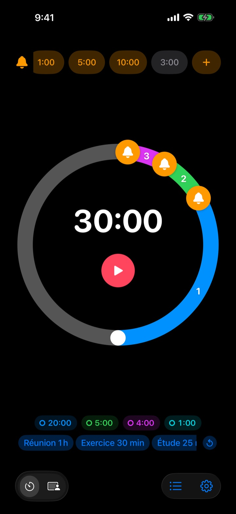
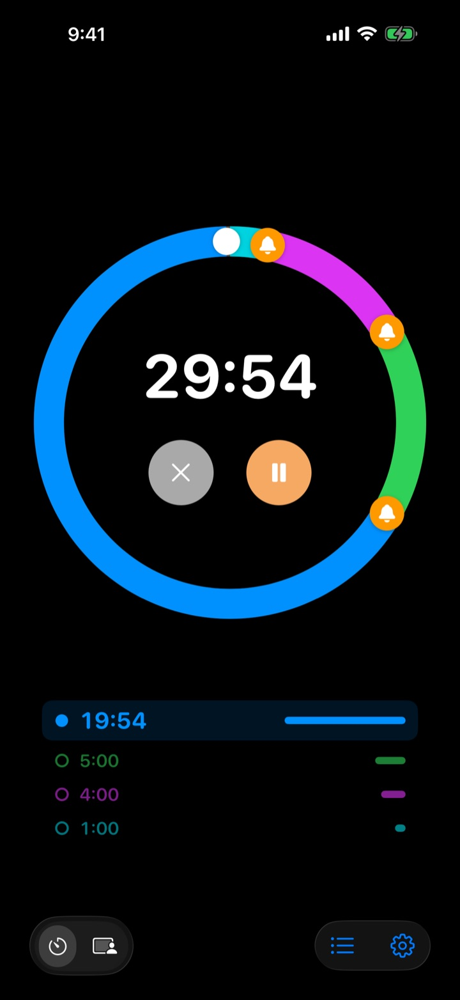
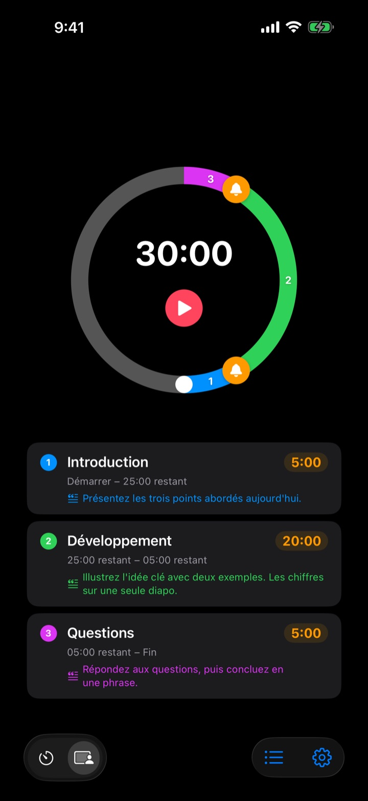
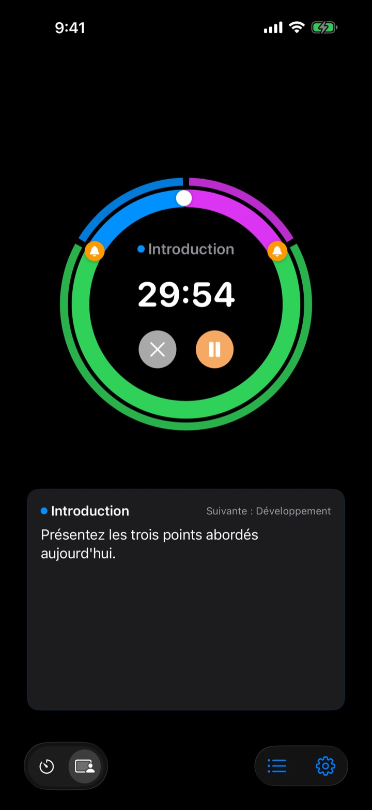

Pas une fois fini,
mais avant la fin
5 minutes avant la fin de l’exposé, 3 minutes avant la fin de la réunion. Rereminder vous fait signe à chaque moment que vous avez choisi, sans que vous ayez à surveiller l’horloge.
Pré-alertes gratuites et sans limite. Sur iPhone, Apple Watch et Mac.

Essayez ici
Choisissez une durée et vos alertes, puis appuyez sur le bouton rouge. Une minute passe en une seconde, et chaque alerte sonne au bon moment.
Votre minuteur a déjà sonné trop tard ?
Un minuteur classique ne sonne qu’à zéro. L’exposé se termine avant la conclusion, le cours s’arrête sans récapitulatif, la réunion déborde sur la suivante sans décision. Il ne vous faut pas un signal qui dit que c’est fini, mais un signal quand il reste encore le temps de conclure.
Prévenu avant la fin, autant de fois que vous voulez
Faites glisser les cloches du cadran à 10, 5 ou 1 minute de la fin, ou n’importe où ailleurs. Aucune limite, et chaque alerte peut porter son propre message, comme « Conclure les diapos ».
Écran éteint, le temps restant reste visible sur l’écran verrouillé et dans la Dynamic Island, et l’Apple Watch vous tapote le poignet.

Découpez votre exposé en parties
Introduction 5 minutes, cœur du sujet 20, questions 5. Donnez à chaque partie un nom et un texte. À chaque changement, une alerte annonce son nom, et votre minutage tient sans y penser. (Pro)

Ce que vous devez dire, à l’écran
Pendant la séance, le texte de la partie en cours et la suivante s’affichent en grand. Une fois passé zéro, le décompte continue pour que vous sachiez de combien vous avez débordé. (Pro)

Trois étapes pour commencer
- 1
Réglez la durée
Tournez le cadran, ou touchez la durée pour la saisir. Un tour fait 60 minutes, deux tours 120.
- 2
Placez vos alertes
Touchez une pastille comme 1:00 ou 5:00 en haut, ou faites glisser une cloche sur le cadran.
- 3
Lancez et oubliez
Verrouillez votre iPhone. L’iPhone et l’Apple Watch vous préviennent à chaque moment choisi.
Les réglages les plus utilisés
- Exposé de 20 minutes
- 5 min avant « Passer à la conclusion », 1 min avant « Remercier »
- Cours de 50 minutes
- 10 min avant « Expliquer les devoirs », 3 min avant « Récapituler »
- Réunion de 30 minutes
- 5 min avant « Valider les décisions »
- Séance de Pilates ou de yoga
- Mode Séance, une partie par enchaînement (Pro)
- Révisions de 25 minutes
- 5 min avant, puis une pause
- Récupération de 3 minutes entre deux séries
- 30 s avant « Préparer la série suivante »
- Mentorat d’une heure
- 15 min et 5 min avant
Enregistrez les réglages que vous réutilisez comme modèles et relancez-les d’un geste (à partir de Mémoire). Vous pouvez aussi lancer ou arrêter un minuteur avec Raccourcis et Siri.
Les pré-alertes sont gratuites. Payez seulement pour qu’il se souvienne.
Gratuit
- Pré-alertes illimitées
- Votre propre message pour chaque alerte
- Activité en direct sur l’écran verrouillé et dans la Dynamic Island
- Alerter jusqu’à ma réponse, et finir par une vraie alarme
- App Apple Watch et barre des menus du Mac
- Toutes les couleurs de thème
Mémoire · Pro
- Mémoire : enregistrer des réglages comme modèles et les lancer d’un geste
- Mémoire : retrouver votre dernier réglage en rouvrant l’app
- Pro : tout Mémoire, plus le mode Séance avec noms de parties et textes
- Pro : dépassement, historique et statistiques
Pour chaque formule, choisissez l’abonnement annuel ou un achat unique à vie. Vous pouvez essayer le mode Séance, le dépassement et l’historique quelques fois avant de payer.
Aucune publicité. Un Pass à vie ouvre aussi toutes les apps de Leeo.
Questions fréquentes
Une alerte n’a pas sonné.
C’est presque toujours une question d’autorisations ou de mode de concentration. Vérifiez l’accès aux notifications dans l’app, sous Réglages › Mode de notification. Si vous utilisez un mode de concentration, ajoutez Rereminder aux apps autorisées dans Réglages › Concentration. En mode silencieux, vous n’avez que la vibration. Si Rereminder figure dans Réglages › Notifications › Résumé programmé, ses alertes sont retenues : retirez-la.
Vais-je remarquer la fin en mode silencieux ?
Oui. Activez « Finir par une vraie alarme » et elle sonne fort, même en mode silencieux ou en concentration. Avec « Alerter jusqu’à ma réponse », l’alerte se répète jusqu’à ce que vous touchiez Arrêter ou Répéter dans la notification.
Mon Apple Watch ne se synchronise pas.
Ouvrez Réglages › Mes appareils dans l’app : vous verrez l’étape qui manque. La montre doit être jumelée à cet iPhone, Rereminder doit y être installé, et vous devez l’ouvrir une fois sur la montre après l’installation. Ensuite, le minuteur passe sur la montre même app fermée.
Mon Mac apparaît comme non connecté.
« Connecté » signifie que l’app était ouverte sur ce Mac au cours des 10 dernières minutes : un Mac qui vient de se réveiller apparaît quelques minutes plus tard. Les deux appareils doivent utiliser le même compte iCloud avec iCloud Drive activé. L’app Mac demande macOS 26 ou version ultérieure.
J’ai payé, mais rien ne s’est débloqué.
Touchez « Restaurer les achats » sur l’écran des formules, connecté au même compte Apple que lors du paiement. Les achats à vie reviennent même après avoir supprimé l’app ou changé d’appareil.
Mes modèles enregistrés sont verrouillés.
Ils sont toujours là. Sans Mémoire ni Pro, ils restent visibles mais verrouillés, et se rouvrent dès que vous achetez l’une des deux formules.
Comment obtenir un remboursement ?
Les remboursements passent par Apple. Faites la demande sur reportaproblem.apple.com avec le compte Apple utilisé pour payer. Si quelque chose ne marchait pas, dites-le-moi aussi pour que la personne suivante n’ait pas le même souci.
Puis-je l’essayer sans l’installer ?
Ouvrez m1zz.github.io/rereminder sur votre iPhone : le minuteur se lance aussitôt en App Clip. Le cadran et les alertes sont là. Les modèles, le mode Séance et l’app Apple Watch sont dans l’app complète.
Sur quels appareils fonctionne-t-elle ?
iPhone avec iOS 26 ou version ultérieure, Apple Watch avec watchOS 11.6 ou version ultérieure, Mac avec macOS 26 ou version ultérieure. L’iPad n’est pas encore pris en charge. L’app existe en 24 langues.
Où sont conservées mes données ?
Minuteurs, modèles, noms de parties, textes et historique restent sur votre appareil et disparaissent si vous supprimez l’app. L’app n’envoie que des statistiques d’utilisation anonymes qui aident à la corriger. La politique de confidentialité dit exactement lesquelles.
Une question, une remarque ? Écrivez à leeo@kakao.com. Je réponds en général sous 2 à 3 jours.